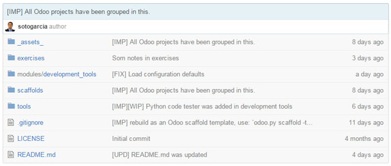

<section class="oe_container">
    <div class="oe_row oe_spaced">
        <div class="oe_span12">
            <h2 class="oe_slogan">Civil service Recruitment</h2>
            <h3 class="oe_slogan">
                Store information about the civil service recruitment proccesses.
            </h3>
        </div>
        <div class="oe_span6">
            <div class="oe_demo oe_picture oe_screenshot">
                <a href="https://github.com/sotogarcia/odoo-academy">
                
                </a>
                <div class="oe_demo_footer oe_centeralign">Git project</div>
            </div>
        </div>
        <div class="oe_span6">
            <p class="oe_mt32">
                The module <b>Civil service recruitment</b> is part of a larger project that collect
                several items related with academy work.
            </p>
            <p class="oe_mt32">
                It is hosted entirely on
                <a href="https://github.com/sotogarcia/odoo-academy">Github</a>,
                it can be downloaded and used it for free under
                <a href="https://www.gnu.org/licenses/lgpl-3.0.en.html">GNU Lesser General Public License v3.0</a>.
            </p>
        </div>
    </div>
</section>

